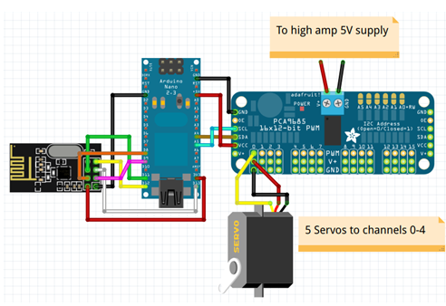

Robot hand using arduino and muscel emg sensor
Robot arm works similar to that of the human hand
Internet of Things

Project description
The presented work is based on the faithful extraction of EMG signal from the human body. The EMG signal acquired is maintained under the range of 0 to 5v and can be accessible by any ADC unit. The digital data obtain after conversion is utilized to read by microcontroller unit. The data received from the microcontroller port is further tested various class of motor like stepper motors. Servo motor and dc motors result in mechanical model which is design to organized the robotic arm which is used for the multiple purpose like handling the things and picking the things according to the controlled signal which is generated by the muscle of the human arm and the these signal are sensed by the EMG sensor and the signal is sends to the controller and according to the input signal the threshold level is set and according to the threshold if the input signal is reach above that signal then the controller gives the command to the servo motor for the move in this the robotic arm is wired so that this can be handle in the specific area of application. And it has the bound so in the future scope the robotic arm is controlled wireless technology.
Step 1: Signal Acquisition
Control is based on EMG - electrical activity of muscles. EMG signal is obtained by three uECG devices (I know, it is supposed to be an ECG monitor, but since it is based on a generic ADC, it can measure any biosignals - including EMG). For EMG processing, uECG has a special mode in which it sends out 32-bin spectrum data, and "muscle window" average (average spectral intensity between 75 and 440 Hz). Spectrum images look like blue-green patterns that change over time. Here frequency is on a vertical axis (on each of 3 plots, low frequency at the bottom, high at the top - from 0 to 488 Hz with ~15 Hz steps), time is on a horizontal (old data on the left overall here is about 10 seconds on the screen). Intensity is encoded with color: blue - low, green - medium, yellow - high, red - even higher.
Step 2: Simplified Signal
For a reliable gesture recognition, a proper PC processing of these spectral images is required. But for simple activation of robotic hand fingers, it's enough to just use averaged value on 3 channels - uECG conveniently provides it at certain packet bytes so Arduino sketch can parse it. These values look much simpler - I've attached a chart of raw values from Arduino's Serial Plotter. Red, green, blue charts are raw values from 3 uECG devices on different muscle groups when I'm squeezing thumb, ring and middle fingers correspondingly. For our eye these cases clearly are different, but we need to turn those values into "finger score" somehow so a program can output values to hand servos. The problem is, signals from muscle groups are "mixed": in 1st and 3rd case blue signal intensity is about the same - but red and green are different. In 2nd and 3rd cases green signals are the same - but blue and red are different.
Step 3: Signal Processing
In order to "unmix" these signals, I've used a relatively simple formula:
S0=V0^2 / (( V1 *a0 +b0)( V2 * c0+d0)),
where S0 - score for channel 0, V0, V1, V2 - raw values for channels 0, 1, 2, and a, b, c, d - coefficients which I adjusted manually (a and c were from 0.3 to 2.0, b and d were 15 and 20, you would need to change them to adjust for your particular sensor placement anyway). The same score was calculated for channels 1 and 2. After this, charts became almost perfectly separated. For the same gestures (this time ring finger, middle, and then thumb) signals are clear and can be easily translated into servo movements just by comparing with threshold
Step 4: Schematics
Schematics is quite simple, you need only nRF24 module, PCA9685 or similar I2C PWM controller, and high amp 5V power supply that would be enough to move all these servos at once (so it requires at least 5A rated power for stable operation).
List of connections:
nRF24 pin 1 (GND) - Arduino's GND
nRF24 pin 2 (Vcc) - Arduino's 3.3v
nRF24 pin 3 (Chip Enable) - Arduino's D9
nRF24 pin 4 (SPI:CS) - Arduino's D8
nRF24 pin 5 (SPI:SCK) - Arduino's D13
nRF24 pin 6 (SPI:MOSI) - Arduino's D11
nRF24 pin 7 (SPI:MISO) - Arduino's D12
PCA9685 SDA - Arduino's A4
PCA9685 SCL - Arduino's A5
PCA9685 Vcc - Arduino's 5v
PCA9685 GND - Arduino's GND
PCA9685 V+ - high amp 5V
PCA9685 GND - high amp GND
Finger servos: to PCA channels 0-4, in my notation thumb - channel 0, index finger - channel 1 etc.
Step 5: EMG Sensors Placement
In order to get reasonable readings, it's important to place uECG devices, which are recording muscle activity, in right places. While many different options are possible here, each requires different signal processing approach - so with my code it's best to use placement similar to my photos.
It may be counter-intuitive, but thumb muscle signal is better visible on the opposite side of the arm, so one of sensors is placed there, and all of them are placed close to the elbow (muscles have most of their body in that area, but you want to check where exactly yours are located - there is quite a big individual difference)
Step 6: Code
Before running the main program, you will need to find out unit IDs of your particular uECG devices (it is done by uncommenting line 101 and turning devices on one by one, you will see ID of current device among other things) and fill them into unit_ids array (line 37). Other than this, you want to play with formula coefficients (lines 129-131) and check how it looks on serial plotter before attaching it to the robotic hand.